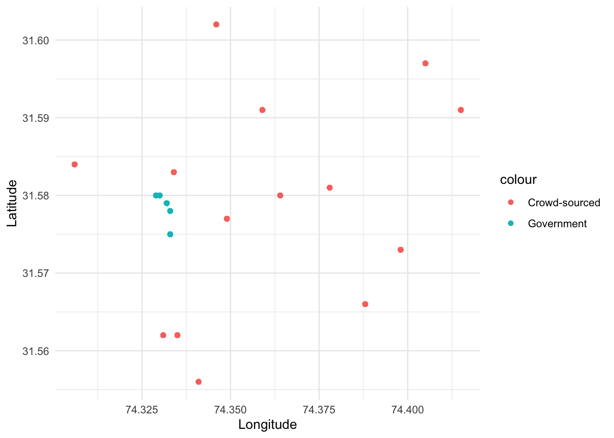

library(tidyverse)
library(dplyr)
library(ggplot2)EDS 222: Homework 1
Background
(The case study in this exercise is based on reality, but does not include actual observational data.)
In this exercise we will look at a case study concerning air quality in South Asia. The World Health Organization estimates that air pollution kills an estimated seven million people per year, due to its effects on the cardiovascular and respiratory systems. Out of the 40 most polluted cities in the world, South Asia is home to 37, and Pakistan was ranked to contain the second most air pollution in the world in 2020 (IQAIR, 2020). In 2019, Lahore, Pakistan was the 12th most polluted city in the world, exposing a population of 11.1 million people to increased mortality and morbidity risks.
In this exercise, you are given two datasets from Lahore, Pakistan and are asked to compare the two different data collection strategies from this city. These data are:
Crowd-sourced data from air quality monitors located in people’s homes. These data are voluntarily collected by individual households who choose to install a monitor in their home and upload their data for public access.
Official government data from monitors installed by government officials at selected locations across Lahore. There have been reports that government officials strategically locate monitors in locations with cleaner air in order to mitigate domestic and international pressure to clean up the air.
Note
All data for EDS 222 will be stored on the Taylor server, in the shared /courses/eds-222/data/ directory. Please see material from EDS 214 on how to access and retrieve data from Taylor. These data are small; all compute can be handled locally. Thanks to Bren PhD student Fatiq Nadeem for assembling these data!
In answering the following questions, please consider the lecture content from class on sampling strategies, as well as the material in Chapter 2 of Introduction to Modern Statistics. Include in your submission your version of this file “eds-222-hw1.qmd” and the rendered HTML output, each containing complete answers to all questions as well as the associated code. Questions with answers unsupported by the code will be marked incomplete. Showing your work this way will help you develop the habit of creating reproducible code.
Assessment
Question 1
Load the data from each source and label it as crowdsourced and govt accordingly. For example:
crowdsourced <- readRDS(file.path("data", "airpol-PK-crowdsourced.RDS"))
govt <- readRDS(file.path("data", "airpol-PK-govt.RDS"))crowdsourced <- readRDS(file.path("data", "airpol-PK-crowdsourced.RDS"))
govt <- readRDS(file.path("data", "airpol-PK-govt.RDS"))
Warning
There’s an implicit assumption about file organization in the code above. What is it? How can you make the code work?
- It assumes that you have a “data” folder where you keep your data. I put my .RDS files in a data folder, so the code works fine.
- These dataframes have one row per pollution observation. How many pollution records are in each dataset?
nrow(crowdsourced)[1] 5488nrow(govt)[1] 1960- There are 5488 pollution records in the
crowdsourceddataset, and 1960 records in thegovtdataset.
- Each monitor is located at a unique latitude and longitude location. How many unique monitors are in each dataset?
# The first way I figured to try using n_distinct()
print(n_distinct(crowdsourced$latitude, crowdsourced$longitude))[1] 14print(n_distinct(govt$latitude, govt$longitude))[1] 5- There are 14 unique monitors in the
crowdsourceddataset and 5 unique monitors in thegovtdataset
Tip
group_by(longitude,latitude) and cur_group_id() in dplyr will help in creating a unique identifier for each (longitude, latitude) pair.
# The method suggested in the tip
cs_grouped <- crowdsourced |>
group_by(longitude, latitude) |>
mutate(id = cur_group_id())
n_distinct(cs_grouped$id)[1] 14govt_grouped <- govt |>
group_by(longitude, latitude) |>
mutate(id = cur_group_id())
n_distinct(govt_grouped$id)[1] 5- Both methods above yield the same answer, reiterating that there are 14 unique monitors in the
crowdsourceddataset and 5 unique monitors in thegovtdataset.
Question 2
The goal of pollution monitoring in Lahore is to measure the average pollution conditions across the city.
- What is the population in this setting? Please be precise.
- In this setting, the population is the pollution condition across all of Lahore over the given time period.
- What are the samples in this setting? Please be precise.
- The samples are the areas where monitors are installed and collecting data. The data are collected with different methodologies, so they are separate samples. So, we have a sample of crowdsourced data and one for the government data. Both samples represent daily observations taken from Nov 4th 2018 to Nov 30th 2019.
- These samples were not randomly collected from across locations in Lahore. Given the sampling approaches described above, discuss possible biases that may enter when we use these samples to construct estimates of population parameters.
- The crowd-sourced data comes from monitors that were voluntarily placed in individuals households. Self-selection bias could come into play here, as people who would choose to monitor and upload pollution data are going to represent a particular slice of the population, and may not be representative of pollution as a whole. People who may be uploading data are probably more educated and affluent.
- The government data comes from monitors that are placed in areas with cleaner air. This will also introduce bias, as a sample from monitors in areas with cleaner air will not represent the population as a whole, and will make it seem like pollution in Lahore is not as bad as it actually is.
Question 3
- For both the government data and the crowd-sourced data, report the sample mean, sample minimum, and sample maximum value of PM 2.5 (measured in \(\mu g/m^3\)).
# government data sample mean value of PM 2.5
mean(govt$PM)[1] 39.64694# government data sample minimum value of PM 2.5
min(govt$PM)[1] 15# government data sample maximum value of PM 2.5
max(govt$PM)[1] 65# crowd-sourced data sample mean value of PM 2.5
mean(crowdsourced$PM)[1] 70.2008# crowd-sourced data sample minimum value of PM 2.5
min(crowdsourced$PM)[1] 20# crowd-sourced data sample maximum value of PM 2.5
max(crowdsourced$PM)[1] 120- Government data
- mean = 39.64694 PM 2.5 (\(\mu g/m^3\))
- min = 15 PM 2.5 (\(\mu g/m^3\))
- max = 65 PM 2.5 (\(\mu g/m^3\))
- Crowd-sourced data
- mean = 70.2008 PM 2.5 (\(\mu g/m^3\))
- min = 20 PM 2.5 (\(\mu g/m^3\))
- max = 120 PM 2.5 (\(\mu g/m^3\))
- Discuss any key differences that you see between these two samples.
- As expected from the bias introduced by the way the government data was monitored only in cleaner areas, the mean, min, and max values from the government data are all lower than the values for the crowd-sourced data.
- Are the differences in mean pollution as expected, given what we know about the sampling strategies?
- Yes, it makes sense that the mean PM 2.5 concentration would be much lower in the government data, as they only placed monitors in places known to have clean air.
Question 4
Use the location of the air pollution stations for both of the sampling strategies to generate a map showing locations of each observation. Color the two samples with different colors to highlight how each sample obtains measurements from different parts of the city.
Tip
longitude indicates location in the x-direction, while latitude indicates location in the y-direction. With ggplot2 this should be nothing fancy. We’ll do more spatial data in R later in the course.
ggplot() +
geom_point(data = crowdsourced,
aes(x = longitude, y = latitude, color = "Crowd-sourced")) +
geom_point(data = govt,
aes(x = longitude, y = latitude, color = "Government")) +
labs(x = "Longitude",
y = "Latitude") +
theme_minimal()
Question 5
The local newspaper in Pakistan, Dawn, claims that the government is misreporting the air pollution levels in Lahore. Do the locations of monitors in question 4, relative to crowd-sourced monitors, suggest anything about a possible political bias?
- Yes, looking at the figure made in question 4, the government placed monitors are all very close together. It could be that they are only concerned with a wealthier neighborhood, or one area of the city that may hold political power. It is also possible that by placing the monitors all in one area, which we know to be an area with relatively clean air, they are trying to skew the public’s view of Lahore as a “clean air” city.
Question 6
Given the recent corruption in air quality reporting, the Prime Minister of Pakistan has hired an independent body of environmental data scientists to create an unbiased estimate of the mean PM 2.5 across Lahore using some combination of both government stations and crowd sourced observations.
NASA’s satellite data indicates that the average PM across Lahore is 89.2 \(\mu g/m^3\). Since this is the most objective estimate of population-level PM 2.5 available, your goal is to match this mean as closely as possible by creating a new ground-level monitoring sample that draws on both the government and crowd-sourced samples.
Question 6.1
First, generate a random sample of size \(n=1000\) air pollution records by (i) pooling observations across the government and the crowd-sourced data; and (ii) drawing observations at random from this pooled sample.
Tip
bind_rows() may be helpful.
# set.seed() for reproducability
set.seed(4321)
# i. pool observations across the government and crowd-sourced data
cs_govt <- bind_rows(crowdsourced, govt)
# ii. draw observations at random from this pooled sample
cs_govt_sample <- slice_sample(cs_govt, n = 1000)Second, create a stratified random sample. Do so by (i) stratifying your pooled data-set into strata of 0.01 degrees of latitude, and (ii) randomly sampling 200 air pollution observations from each stratum.
# i. stratify pooled data-set into strata of 0.01 degrees of latitude
cs_govt_strat <- cs_govt |>
mutate(lat_rounded = round(latitude, digits = 2))
# ii. randomly sample 200 air pollution observations from each stratum
rand_strat_sample <- cs_govt_strat |>
group_by(lat_rounded) |>
slice_sample(n = 200)
# check that this worked
table(rand_strat_sample$lat_rounded)
31.56 31.57 31.58 31.59 31.6
200 200 200 200 200 Question 6.2
Compare estimated means of PM 2.5 for each sampling strategy to the NASA estimate of 89.2 \(\mu g/m^3\). Which sample seems to match the satellite data best? What would you recommend the Prime Minister do? Does your proposed sampling strategy rely more on government or on crowd-sourced data? Why might that be the case?
# mean of random sample
mean(cs_govt_sample$PM)[1] 62.59# mean of stratified random sample
mean(rand_strat_sample$PM)[1] 66.853Though the means of the two sampling strategies similar, the mean from the stratified random sample matches the satellite data better than the random sample. I would recommend that the Prime Minister use the stratified random sample strategy to most accurately represent the mean PM 2.5 across Lahore. This proposed sampling strategy relies more on crowd-sourced data. The government data has a lot of observations that are all really close together geographically. In the pooled dataset, observations from the government monitors account for 26% of the total pollution observations.
# percentage of pooled data that comes from government monitors
(nrow(govt) / nrow(cs_govt)) * 100[1] 26.31579When we stratified the pooled dataset, all of the observations from government monitors were grouped into the same strata.
# proof that when we stratified our dataset we grouped all of the government observations into one strata
govt_strat <- govt |>
mutate(lat_rounded = round(latitude, digits = 2))
n_distinct(govt_strat$lat_rounded) [1] 1By then taking an equal number of random samples from each strata, we limit the number of observations that could have come from government monitors to no more than 20% (as the government monitors were bound to 1 out of 5 strata), and our analysis better represents the geographic spread of the crowd sourced data.